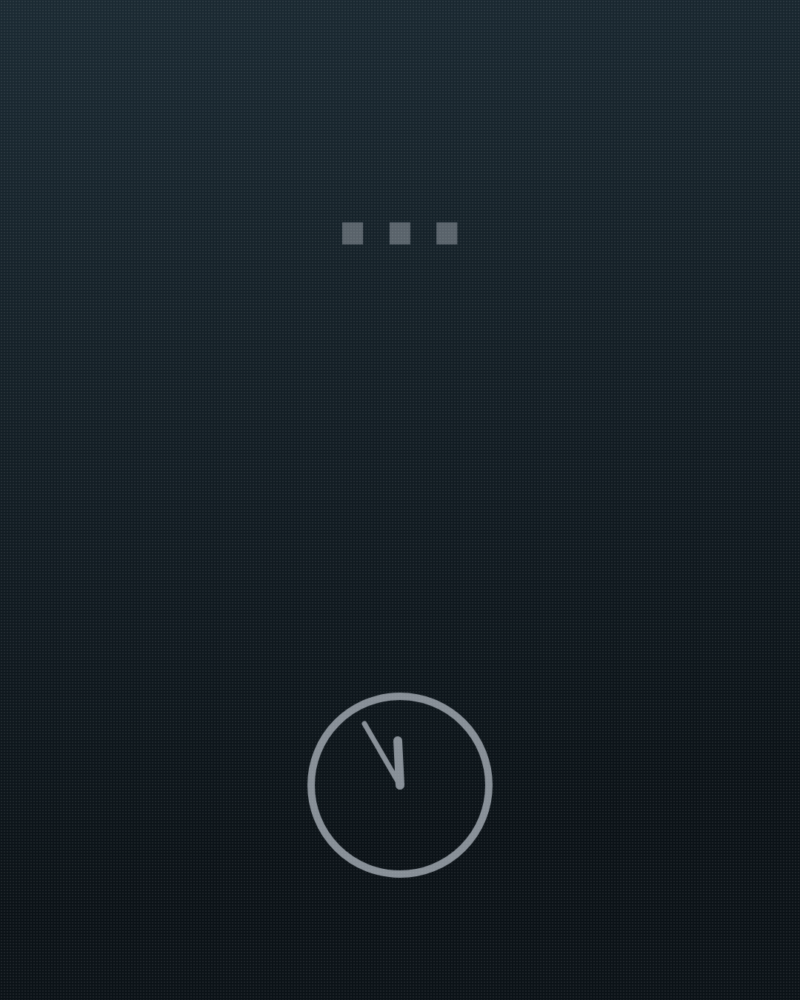
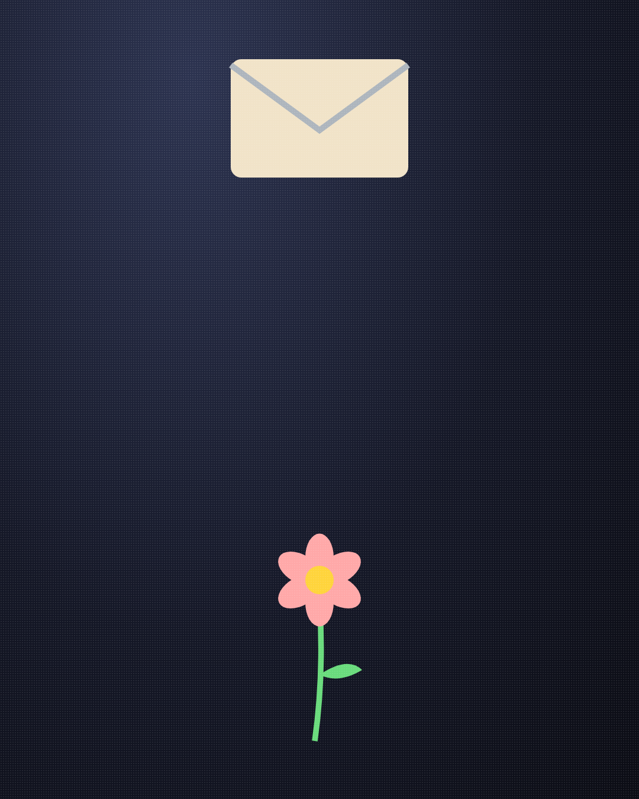
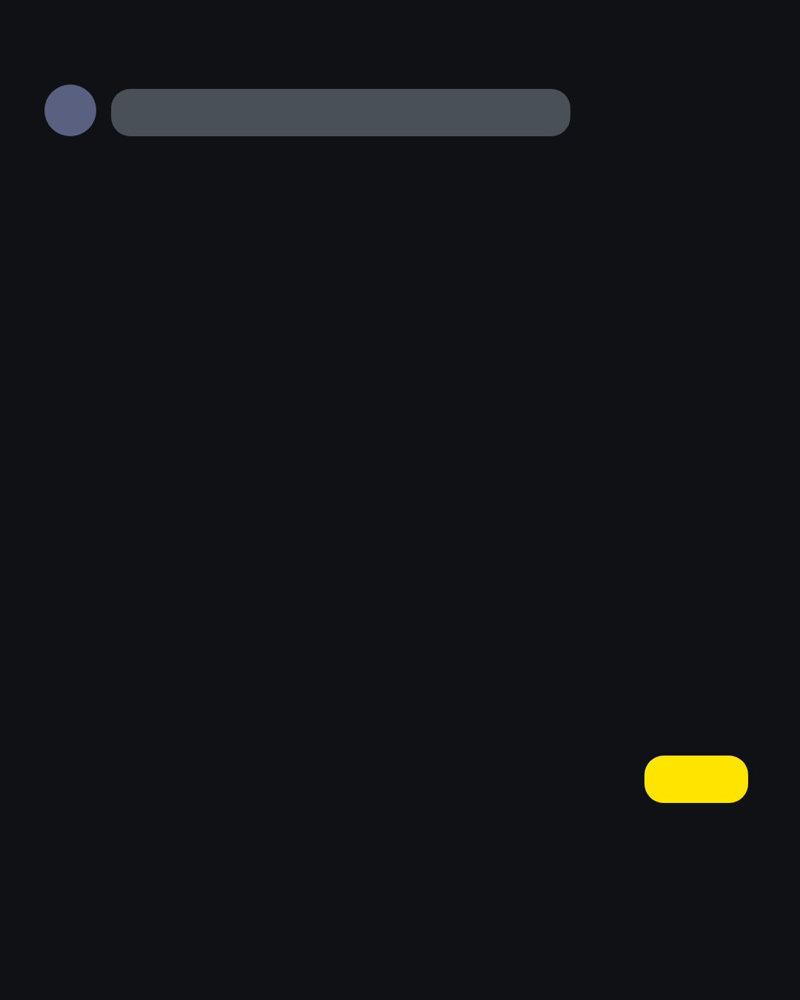
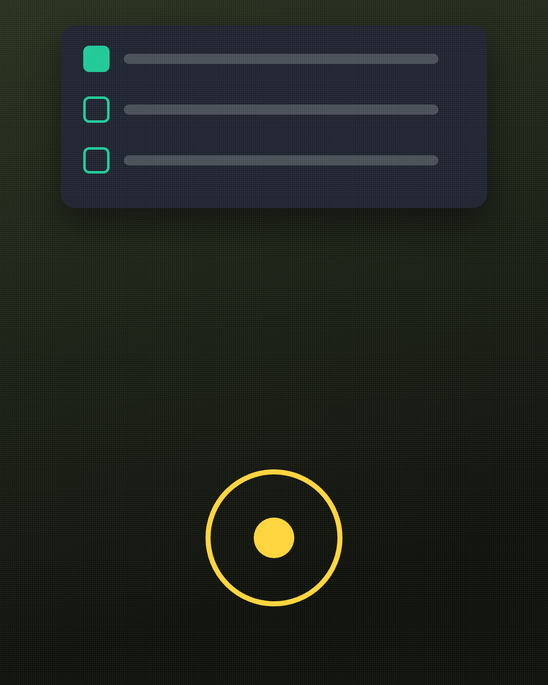
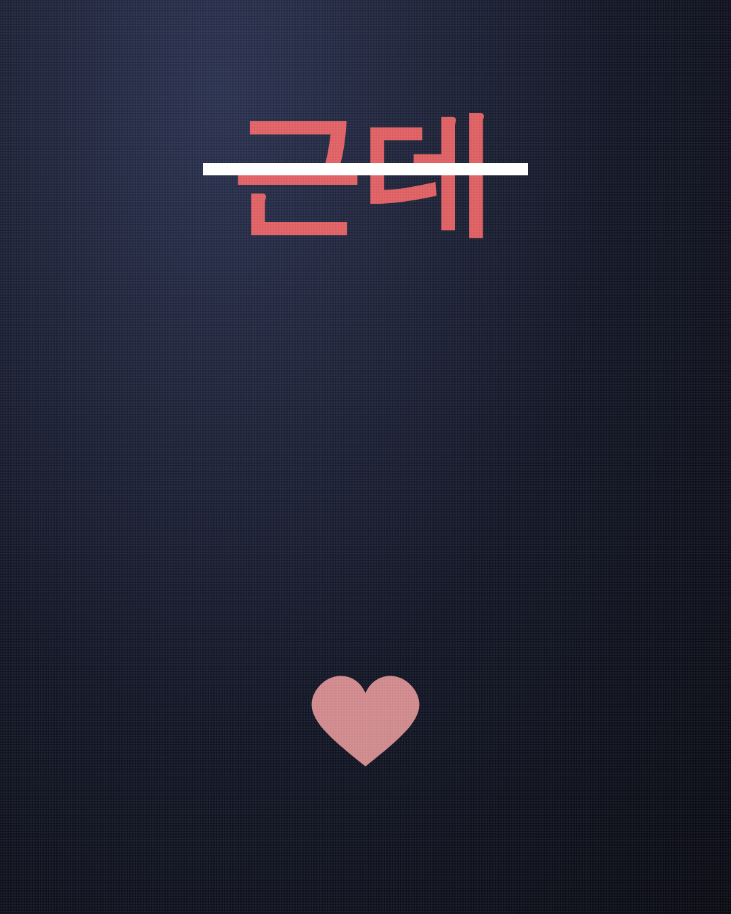
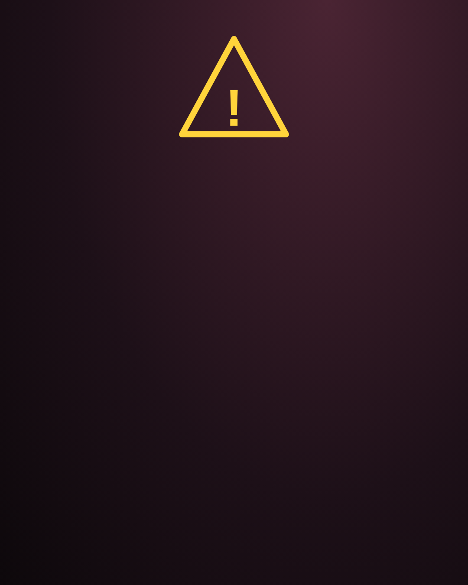
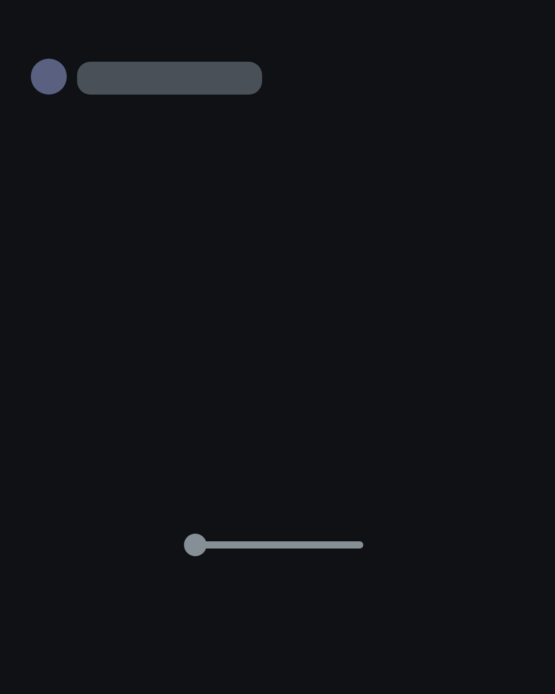
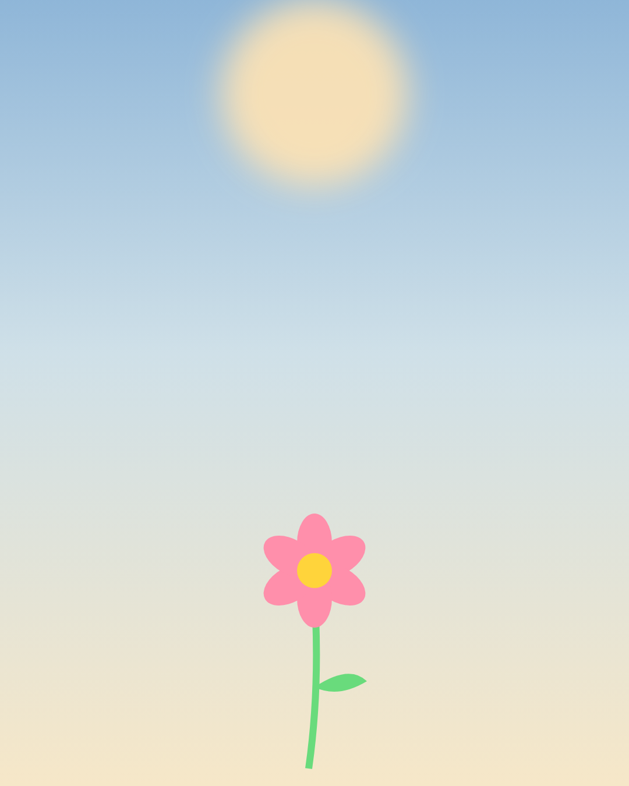
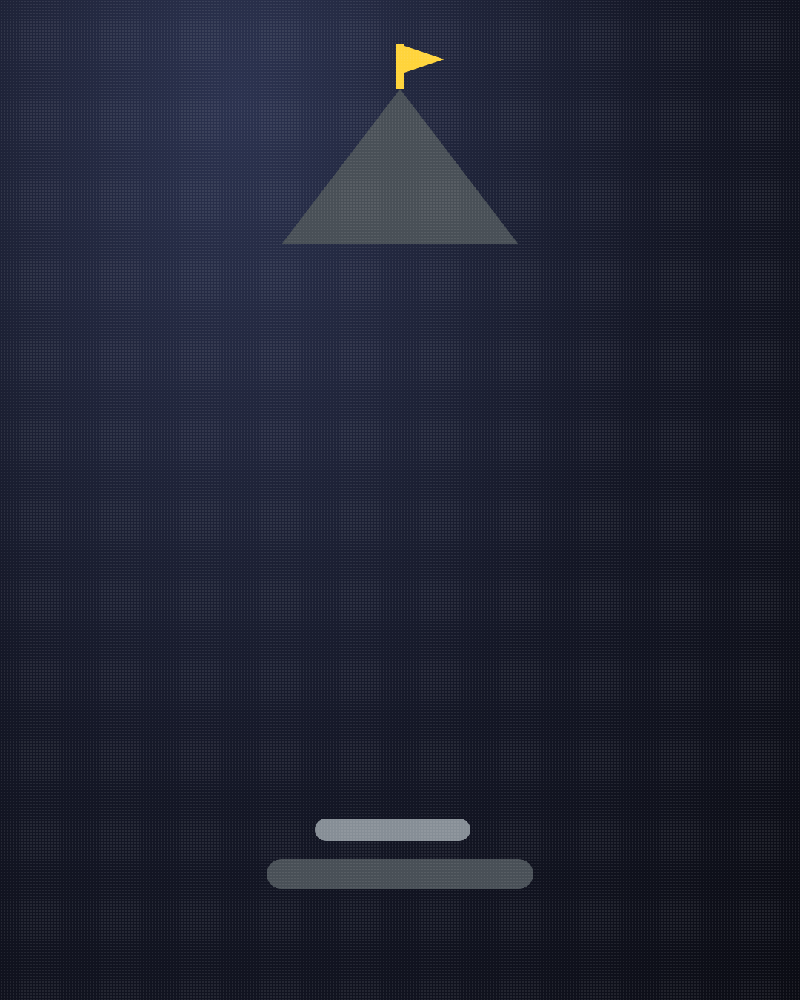

남자가 진짜 미안할 때만
하는 말
("미안해"는 아니에요.)
1/14
@mszexc
넘겨보세요 →

"미안해"는
싸움을 끝내고 싶을 때도 나와요.
2/14
@mszexc
남자들끼리 하는 말 #50

진짜 미안한 남자는
"무엇이" 미안한지를 말해요.
3/14
@mszexc
남자들끼리 하는 말 #50

"그날 내가 네 말 끊은 거, 미안해."
(뭘 잘못했는지 정확히 아는 사과.)
4/14
@mszexc
남자들끼리 하는 말 #50

첫 번째 신호.
잘못한 장면을 구체적으로 말해요.
5/14
@mszexc
남자들끼리 하는 말 #50

두 번째 신호.
"근데"가 없어요.
("미안해, 근데 너도…"는 사과가 아니에요.)
6/14
@mszexc
남자들끼리 하는 말 #50

세 번째 신호.
다음을 약속해요.
"다음엔 끝까지 들을게."
7/14
@mszexc
남자들끼리 하는 말 #50
남자들끼리는 이렇게 말해요.
"자존심 상하는데, 그래도 내가 먼저 했어."
(먼저 한 사과는, 이미 오래 생각한 사과예요.)
8/14
@mszexc
남자들끼리 하는 말 #50

네 번째 신호.
말보다 행동이 먼저 바뀌어요.
(같은 일로 두 번 사과하지 않게.)
9/14
@mszexc
남자들끼리 하는 말 #50

반대로 이런 사과는
조심하세요.
10/14
@mszexc
남자들끼리 하는 말 #50

"미안하다고 했잖아."
(사과가 아니라, 대화를 끝내려는 말이에요.)
11/14
@mszexc
남자들끼리 하는 말 #50

진짜 사과를 받았다면,
한 번은 받아 주세요.
(계속 꺼내면, 다음 사과가 늦어져요.)
12/14
@mszexc
남자들끼리 하는 말 #50

남자에게 사과는
자존심을 내려놓는 일이에요.
13/14
@mszexc
남자들끼리 하는 말 #50

이것만 기억하세요.
진짜 사과는 "미안해" 다음 문장에 있어요.
남자가 하는 말의 뜻은 전자책 1·2권에 · 프로필 링크에서 무료로 받아보세요
14/14
@mszexc
남자들끼리 하는 말 #50